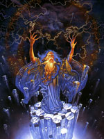

Тараніс (латинське Taranis, "громовержець", від tarann, "грім"), в міфології кельтських народів бог грому, блискавок і небесного вогню. Один з найдавніших богів кельтів. Згадується у римського поета першого століття нашої ери Лукана і в так званих Берна схоліях до нього X століття, де Тараніс ототожнювався з римським дісоміі.
З схолій також відомо, що жертви Тараніса спалювалися. Галльські пам'ятники римської епохи представляють Тараніса бородатим гігантом, який тримає колесо або кілька спіралей. На території Рейнської області і сучасної Бретані скульптурні зображення Тараніса відомі в формі колон, на вершині яких бог Тараніс зневажає гіганта зі змієподібними нижніми кінцівками.
Спірним є питання, становив чи Тараніс - бог грому і небесного вогню, який іноді ототожнювався з римським Юпітером, разом з Тевтат і Єзус органічну божественну тріаду в дорімской час.